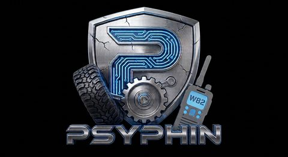
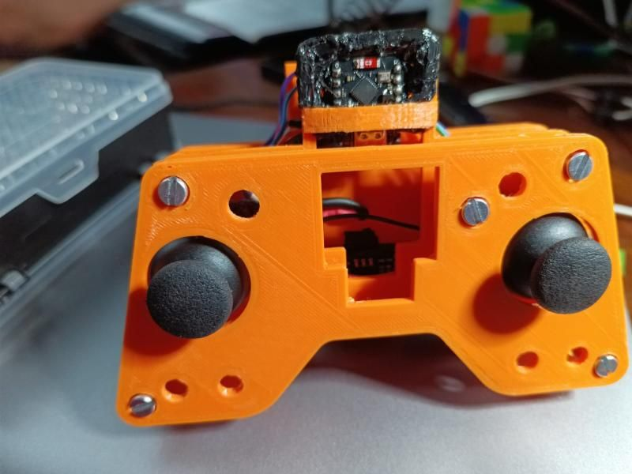
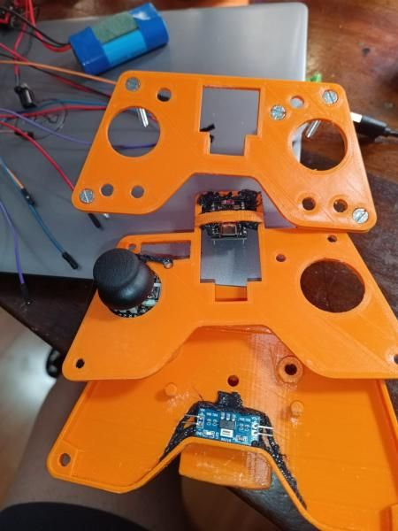
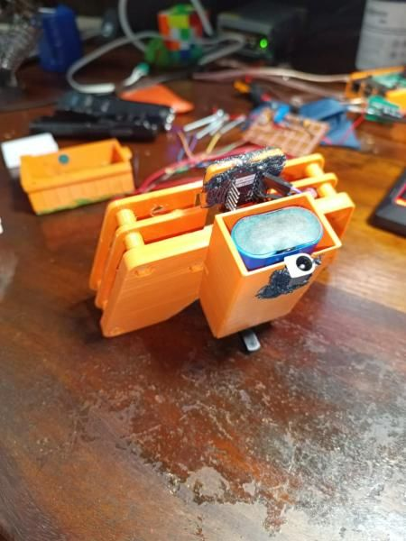
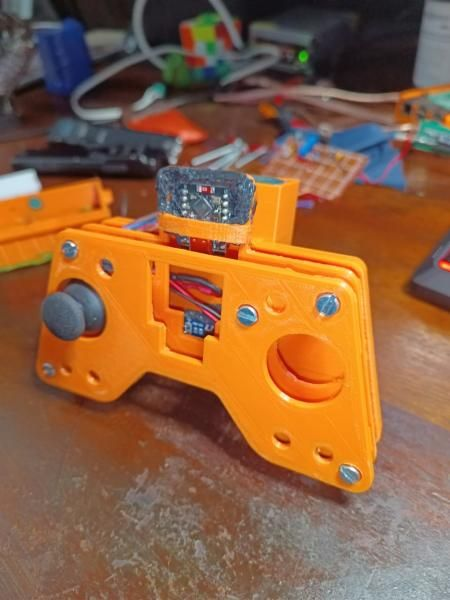
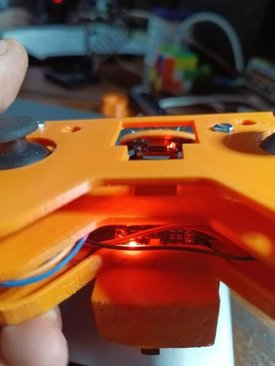

ESP32 RC Remote
A home-made, two-joystick remote control and a matching receiver, for driving my own radio-controlled builds without buying a commercial transmitter.
The handheld transmitter is a 3D-printed case around an ESP32-C3 board, two thumbsticks and a rechargeable battery. It talks straight to an ESP32 in the vehicle using ESP-NOW on 2.4 GHz, a direct board-to-board link with very little lag and no Wi-Fi router or phone signal needed. It's meant for custom RC projects such as off-road rigs or bait boats.

How it works
- Direct link. ESP-NOW sends short packets straight from one ESP32 to another, fixed to Wi-Fi channel 6 (2.437 GHz), with the transmitter at its maximum output of 19.5 dBm.
- Four axes, two buttons. Each thumbstick gives an X and a Y reading, read by the ESP32-C3's 12-bit converter (0–4095), plus a push button.
- About 20 updates a second. The transmitter sends every 50 ms.
- Rechargeable. A single 18650 lithium-ion cell, charged over USB-C through a TP4056 board, with a step-up converter for the electronics.
- Receiver. A classic ESP32 in the vehicle drives the motor controllers, servos or relays, and uses its onboard LED to show the link status and failsafe.
Parts and cost
| Part | Qty | Job | Local (ZAR) | Imported |
|---|---|---|---|---|
| ESP32-C3 SuperMini | 1 | Transmitter board | R75–R110 | R40–R55 |
| ESP32 Dev Module (classic) | 1 | Receiver in the vehicle | R90–R120 | R50–R70 |
| Dual-axis joystick modules | 2 | Throttle and steering | R24–R50 | R15–R20 |
| TP4056 charger module | 1 | USB-C charging and battery protection | R15–R25 | R8–R12 |
| PETG filament | ~150 g | Case panels and plates | R45–R65 | R30–R40 |
| M3 hardware and wiring | — | Screws, standoffs, silicone wire | R20–R35 | R10–R15 |
| Total | R269–R405 | R153–R212 |
The case
The transmitter is built from stacked, screwed-together panels. That keeps it stiff and means any part can be opened up to swap or service the electronics.


- Faceplate: recessed cut-outs so both thumbsticks move through their full range.
- Standoffs: built-in bosses for M3 self-tapping screws or heat-set brass inserts.
- Electronics: channels to hot-glue or plate-mount the TP4056 charger and the ESP32-C3 next to the USB cut-outs.
Print settings: PETG (tougher, more UV- and heat-resistant than PLA), 0.20 mm layers, 20–30% grid or gyroid infill, 3 walls and 4 top and bottom layers. Supports are only needed around the counter-bored M3 holes and a few cut-outs.


Wiring
Transmitter (ESP32-C3 SuperMini)
| Module | Pin | ESP32-C3 | Job |
|---|---|---|---|
| Left joystick | VRX | GPIO 0 | Left X axis (ADC1_CH0) |
| VRY | GPIO 1 | Left Y axis (ADC1_CH1) | |
| SW | GPIO 6 | Push button (INPUT_PULLUP) | |
| Right joystick | VRX | GPIO 2 | Right X axis (ADC1_CH2) |
| VRY | GPIO 3 | Right Y axis (ADC1_CH3) | |
| SW | GPIO 7 | Push button (INPUT_PULLUP) | |
| Power | VCC | 3.3V | Shared 3.3 V rail for the joysticks |
| GND | GND | Shared ground |
Receiver (classic ESP32)
| Output | ESP32 | Job |
|---|---|---|
| Status LED | GPIO 2 | Onboard LED: link and failsafe indicator |
| PWM / motor outputs | Set per vehicle | Motor controllers (ESCs), servos or relays |
The data packet
Each transmission carries both sticks and both buttons in one small structure, which the receiver unpacks with the same definition:
typedef struct struct_message {
int leftX;
int leftY;
bool leftBtn;
int rightX;
int rightY;
bool rightBtn;
} struct_message;